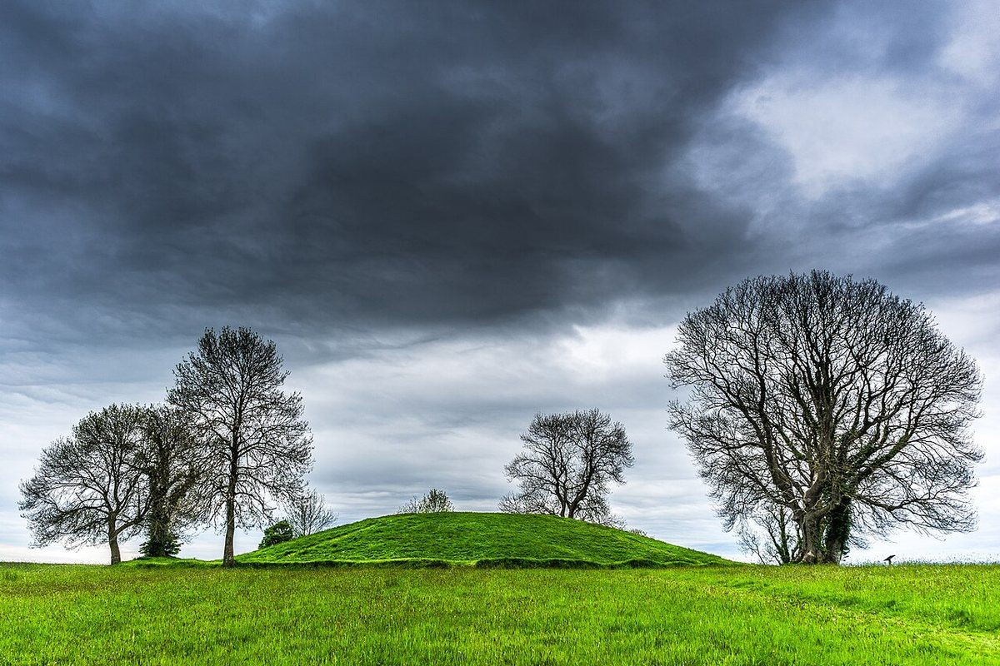

.jpeg){kind=link}
Northern Ireland Historic Environment Map Viewer ↗
Explore mapped archaeology, listed buildings and other historic records north of the present border.
Deep dives / Europe & Mediterranean
The Bann, the Foyle, Lough Erne and Strangford Lough carried people and materials through the north of Ireland. Ports along the North Channel reached out to Scotland, while medieval and early modern centres were part of histories that also include Donegal. Use the points to explore these connections and the growth of industrial Belfast.
Northern Ireland and selected related places in historical Ulster before 1900. Historical Ulster spans the present-day border, and its boundaries and systems of rule changed over time.

Approximate discovery sites, built places and historical reference localities on a modern basemap.
About 7750–7540 calibrated BCE
Circular patterns of postholes and pits mark Mesolithic occupation above the River Bann. [1]
55.11°, -6.65°Later Neolithic, third millennium BCE bracket
A large circular enclosure and the remains of a passage tomb survive in a landscape with other Neolithic funerary and ceremonial sites. [2]
54.53°, -5.95°Bronze Age, broad bracket
A cluster of low stone circles, rows and cairns was uncovered in a boggy landscape. [3]
54.70°, -6.94°First century BCE
A hoard found near the mouth of the Roe included a decorated gold collar and a small boat with equipment. [5]
55.06°, -6.97°Around 619–621 CE
Water stored behind a dam drove a mill as the tide receded. [6]
54.50°, -5.64°Twelfth century CE
A tall stone round tower survives among churches, crosses and burial remains on an island in Lough Erne. [7]
54.38°, -7.66°Late twelfth century CE
John de Courcy’s expansion into east Ulster brought a stronghold to a rock overlooking the lough. [8]
54.72°, -5.81°Fifteenth century CE
A tower and castle complex by the River Eske preserves a centre associated with the O’Donnell lordship of Tír Chonaill. [9]
54.66°, -8.11°Later sixteenth and early seventeenth centuries
The castle became a seat of the MacDonnells, whose relationships and political interests crossed the North Channel. [10]
55.21°, -6.58°September 1607
Hugh O’Neill, Rory O’Donnell, Cúchonnacht Maguire and followers embarked for continental Europe. [11]
55.09°, -7.53°1613–1618 CE
A circuit of walls was built around the plantation city under the auspices of London companies. [12]
55.00°, -7.32°Mid–later nineteenth century CE
A mill complex developed near the waterfront as linen manufacturers expanded production. [13]
54.62°, -5.92°From 1861 through the 1890s
A nineteenth-century shipbuilding firm enlarged its operations on Queen’s Island. [14]
54.61°, -5.90°1891 census
The census returned 255,950 people for its City of Belfast tabulation. [15]
54.60°, -5.93°Hut plans and pits at Mount Sandel reveal early postglacial work and settlement above the Bann. The broad bank at Ballynahatty preserves a Neolithic monument beside related but differently dated features. At Beaghmore, peat kept multiple stone settings and cairns visible to archaeologists, even where individual dates are hard to determine. [1] [2] [3]
The circular timber structure at Navan Fort is one stage in a long-used landscape. The gold miniature boat deposited near the Roe offers an unusual record of ancient water travel and skill, through the decisions of a craftsperson. Early medieval communities placed working infrastructure beside navigable water, as the mill on Mahee Island and the monastic buildings on Devenish demonstrate. [4] [5] [6] [7]
The strongholds at Carrickfergus, Donegal and Dunluce belonged to overlapping histories of Anglo-Norman expansion, Gaelic lordship and cross-channel kinship. The Flight of the Earls and the construction of a fortified plantation town on the Foyle mark different parts of the shift to more direct Crown rule and large-scale changes in landholding. [8] [9] [10] [11] [12]
Belfast’s linen works and shipyards gathered workers and capital near the harbour. At Jennymount, expansions preserve evidence of a mill’s changing needs. The shipyards occupied a different part of the waterfront and developed on a different scale. The 1891 census counts 255,950 people within the city scope used in its table, a date-specific measure of an industrial city. [13] [14] [15]
Open the source maps for their original detail, legends and dates. Their coverage and reproduction terms belong to the issuing institution.
Explore mapped archaeology, listed buildings and other historic records north of the present border.
Inspect surviving seventeenth-century maps, landownership records and their modern georeferencing.
Open this era on global Explore ↗ Open Europe & Mediterranean atlas ↗ Climate, sea level & ice-sheet context ↗
Sources checked and linked above; geological and historical dating methods follow the primary papers.